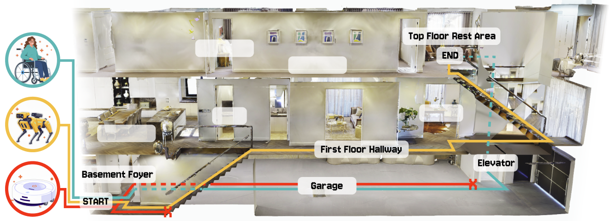
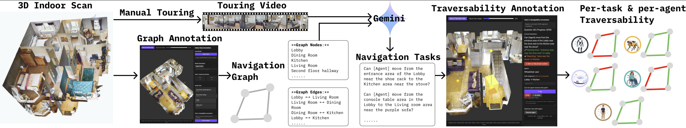
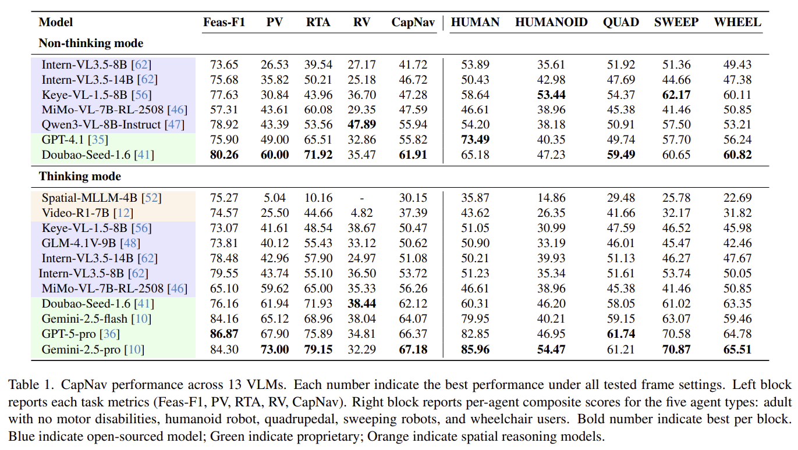

We introduce Capability-Conditioned Navigation (CapNav), a benchmark designed to evaluate how well vision–language models (VLMs) can navigate complex indoor environments given an agent's specific physical and operational capabilities.
Unlike prior navigation benchmarks that assume uniform agent capabilities, CapNav explicitly conditions navigation tasks on diverse agent mobility profiles—capturing real-world constraints such as wheelchair accessibility, step avoidance, and narrow passage traversal. Given (1) a tour video of an indoor space, (2) nodes of its navigation graph, (3) an agent's mobility profile, and (4) a navigation task, CapNav evaluates model outputs along multiple dimensions: task feasibility, path validity, route traversability, and reasoning validity.
We evaluate a wide range of state-of-the-art VLMs and specialized spatial reasoning models, revealing significant gaps in their ability to ground agent-specific constraints during navigation planning. CapNav provides a rigorous framework for driving future progress in accessibility-aware and capability-aware embodied AI.
The CapNav benchmark evaluates whether VLMs can correctly ground differences in agent mobility capabilities when generating navigation plans. The figure below demonstrates a navigation task that has different feasibility and paths for different agents.

Starting from a 3D indoor scan, we manually record a touring video and a navigation graph. We then use Gemini to generate natural language navigation tasks. Finally, per-task and per-agent traversability are annotated by manually controlling agents in the annotation interface.

We benchmark a comprehensive suite of VLMs and spatial reasoning models on CapNav. Results reveal significant challenges in capability-conditioned navigation for all current models, with substantial room for improvement across all four evaluation dimensions.

The CapNav dataset is hosted externally across two platforms:
@article{su2026capnav,
title={CapNav: Benchmarking Vision Language Models on Capability-conditioned Indoor Navigation},
author={Su, Xia and Chen, Ruiqi and Liu, Benlin and Ma, Jingwei and Di, Zonglin and Krishna, Ranjay and Froehlich, Jon},
journal={arXiv preprint arXiv:2602.18424},
year={2026}
}